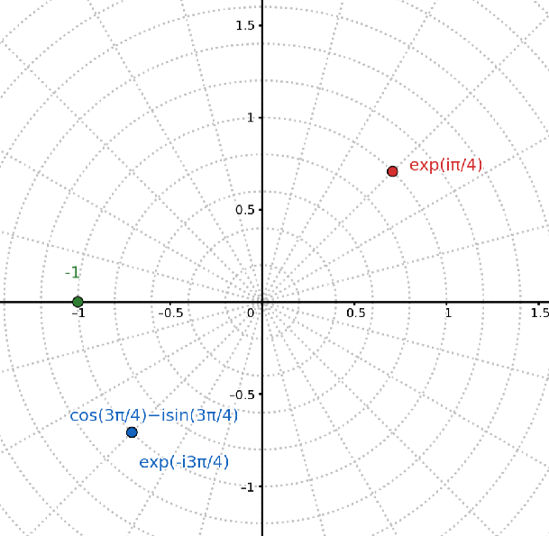
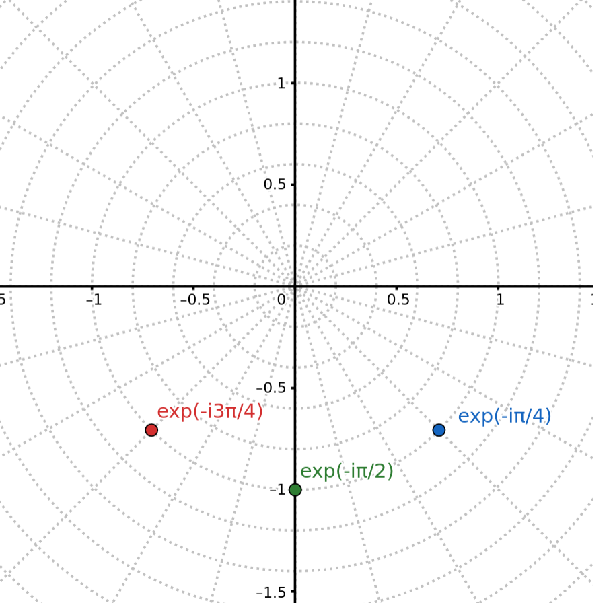
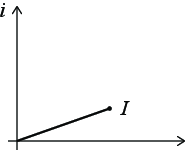
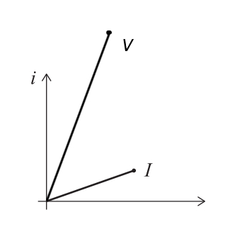
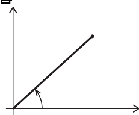
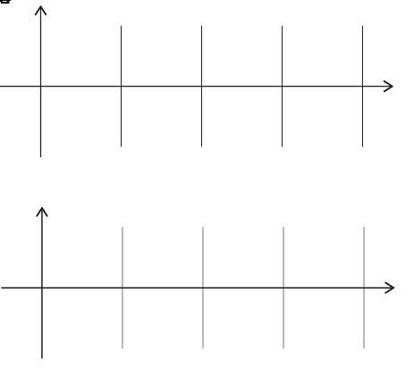
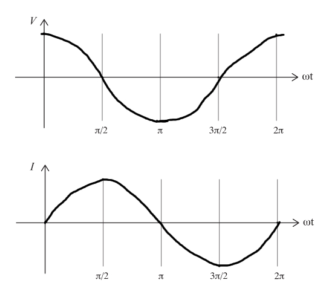
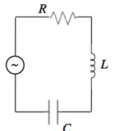
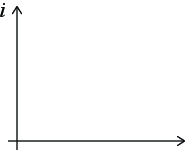
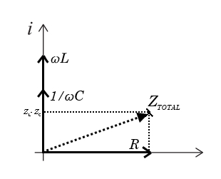

Du skal lage en motstand ved å vikle en wire rundt en sylinder. For å gjøre induktansen så liten som mulig har du blitt foreslått å vikle halvparten av wiren den ene veien og halvparten den andre veien. Vil det gi ønsket effekt? Forklar hvorfor eller hvorfor ikke.
En venninne kommer til deg med et spørsmål:
Hvis du plasserer to spoler med induktansene \( L \) etter hverandre i en krets vil de oppføre seg som en spole med induktansen \( 2L \). Men hvis du legger en spole med induktans \( L \) oppå en spole med induktans \( L \) blir den totale induktansen \( 4L \). Hvordan kan dette være mulig?
Hva vil du si til din venninne? Har hun regnet feil eller er det noe annet som er galt med argumentet hennes?
Strømmen i en vekselsstrømslinje endrer retning et visst antall ganger per sekund og gjennomsnittsverdien er null. Forklar hvordan det er mulig å transportere energi (effekt) i et slikt system.
En krets består av en vekselsstrømkilde, en lyspære, en kondensator og en spole, alle koblet i serie. Er det mulig at pæren lyser like sterkt hvis man fjerner både kondensatoren og spolen?
Beskriv oppførselen til kretsen ved hjelp av impedansen til kondensatoren (\( \hat{Z} = 1/(i \omega C) \)) og spolen (\( \hat{Z} = i \omega L \)).
Consider a circuit consisting of a battery with emf \( V_0 \), a resistance \( R \) and an inductance \( L \) connected in series in a loop. A current \( I \) is flowing due to the emf.
a) Draw the circuit using standard symbols for the components. Illustrate the positive direction for \( I \).
b) What is the voltage drop \( V_R \) across the resistor? (The voltage drop is a positive number in the direction of the current).
\( IR \)
The voltage drop is \( V_R = IR \).
c) For the inductance \( L \) the flux is \( \Phi = LI \). What is the emf across the inductance \( L \)?
\( -L \d I/ \d t \)
The emf is \( e = - d\Phi/dt = -L dI/dt \).
d) Write down the sum of emf and potential drops around the circuit.
\( V_0 + e - RI = V_0 + (-d \Phi/dt) - RI = 0 \)
The battery and the inductance have an emf, whereas the resistor has a potential drop: $$ \begin{equation} V_0 + e - RI = V_0 + (-d \Phi/dt) - RI = 0 \tag{12.1} \end{equation} $$
e) What is the potential drop \( V_L \) over the inductance \( L \)? Ensure that you get the same sum of emf and potential drops around the circuit when you represent the inductance as a component with a voltage drop as when you represented it by an emf.
\( V_0 - RI - V_L = V_0 - RI - d \Phi/dt \)
Instead of writing the inductance as an emf, \( e = - d\Phi/dt \), we can write it as a potetial drop \( V_L = - e = d \Phi/dt \). The sum of emf and potential drops around the circuit is then: $$ \begin{equation} V_0 - RI - V_L = V_0 - RI - d \Phi/dt = 0 \; \tag{12.2} \end{equation} $$ which is indeed the equation we found above.
f) Find a differential equation for the current, \( I \).
\( \frac{\d I}{\d t} = \frac{V_0}{L} - \frac{1}{\tau} I \)
Kirchoff's law of potentials gives that: $$ \begin{equation} V_0 - R I - V_L = V_0 - R I - d \Phi /dt = V_0 - RI - d (LI)/dt = V_0 - RI - L dI/dt =0 \; , \tag{12.3} \end{equation} $$ which gives $$ \begin{equation} L \frac{dI}{dt} = V_0 - R I \; \Rightarrow \; \frac{dI}{dt} = \frac{V_0}{L} - \frac{1}{\tau} I \; , \tag{12.4} \end{equation} $$ where \( \tau = L/R \) is of unit time. In addition to this, we also need an initial condition for \( I \), e.g. \( I(0) = I_0 \).
g) First, find the solution to this equation when \( V_0=0 \) and \( I(0) = I_0 \).
\( I(t) = I_0 e^{-t/\tau} \)
In this case, the equation is homogeneous and the solution is \( I(t) = K e^{-t/\tau} \). The initial condition, \( I(0) = 0 \) gives that \( K = I_0 \), hence \( I(t) = I_0 e^{-t/\tau} \).
h) Second, find the solution to this equation when \( V_0>0 \) and \( I(0) = 0 \).
\( I(t) = (V_0/R) \left( 1 - e^{-t/\tau} \right) \)
In this case we add the particular solution to the homogeneous solution at \( t=0 \), getting \( V_0/R - K = 0 \) and \( K = V_0/R \), hence $$ \begin{equation} I(t) = (V_0/R) \left( 1 - e^{-t/\tau} \right) \; . \tag{12.5} \end{equation} $$
Adapted from Steven Pollock, University of Colorado-Boulder
In this tutorial we will focus on basic skills in complex numbers. If you master these elements, do them quickly and move on to the next tutorial in the set
Recall that a complex number \( z \) can be written in two ways: \( z = a + i b \) or \( z = A e^{i \theta} \), where \( a \), \( b \), \( A \) and \( \theta \) are real numbers such that \( |z|=A=\sqrt{a^2 + b^2} \), \( a = Re\left\{ z \right\} = A \cos( \theta) \), \( b = Im \left\{z \right\} = A \sin(\theta) \). When you multiply two complex numbers, the phase angles add: \( z_1 = A_1 e^{i \theta_1} \), \( z_2 = A_2 e^{i \theta_2} \), \( z_1 \, z_2 = A_1 A_2 e^{i(\theta_1 + \theta_2)} \).
a) Rewrite the following complex numbers in the form \( Ae^{i \theta} \): $$ \begin{equation} -i = \qquad \, \frac{5}{i} = \qquad \tag{12.6} \end{equation} $$ $$ \begin{equation} 1+i = \qquad \, \frac{1}{1-i} = \qquad \tag{12.7} \end{equation} $$
\( -i = e^{-i \pi/2} \), \( 5e^{-i \pi/2} \), \( \sqrt{2}e^{i \pi/4} \), \( \sqrt{2}e^{-i\pi/4} \).
\( -i = e^{-i \pi/2} \), \( 5e^{-i \pi/2} \), \( \sqrt{2}e^{i \pi/4} \), \( \sqrt{2}e^{-i\pi/4} \).
b) Use the last two answers and the rules for multiplying complex exponentials to find $$ \begin{equation} \frac{1+i}{1-i} = \qquad \tag{12.8} \end{equation} $$ What is the magnitude, phase and real part of your answer?
\( i \)
\( (1+i)/(1-i) = e^{i \pi/4 + i \pi/4} = e^{i \pi/2} = i \)
c) Draw the following complex numbers in the complex plane: \( e^{i \pi/4} \), \( -1 \), \( \cos(3 \pi/4) - i \sin(3 \pi /4) \), \( e^{-i 3 \pi /4} \).

d) Draw the following complex numbers \( e^{-i \omega t} \) in the complex plane for the times \( \omega t_1 = \pi /4 \), \( \omega t_2 = \pi/2 \), \( \omega t_3 = 3 \pi /4 \). Would an arrow representing \( e^{-i \omega t} \) in the complex plane rotate clockwise or counter-clockwise as time advances?
Assuming that \( \omega > 0 \), as time advances the angle in the complex plane would "decrease". That is, it would rotate clockwise.

e) For a circuit with a resistor \( R \) and an AC source \( V(t) = V_0 e^{i \omega t} \) (\( V_0 \) is real), what is the magnitude of the physical current through the resistor when \( \omega t = \pi/3 \).
\( |I| = |V_0|/|R| \)
We have \( I = V/R = V_0 e^{i\omega t}/R \), and knowing that \( |e^{ix}| = 1 \) we get that \( |I| = |V_0 e^{i\omega t}|/|R| =|V_0|/|R| \).
(Based on a tutorial from Steven Pollock, University of Colorado-Boulder)
In this tutorial we will focus on the complex impedance, \( Z \), in AC circuits. The goal is for you to build a strong intuition for the concepts and basic skills that allow you to address longer and more elaborate exercises
a) Given the impedance \( Z = 2 e^{i \pi/4} \) and the complex number \( I \) shown in the figure below, plot the complex number \( V = I \, Z \).

Multiplying two complex numbers of magnitutes \( A_1 \) and \( A_2 \) and phases \( \theta_1 \) and \( \theta_2 \) respectively, results in a complex number of amplitude \( A_1A_2 \) and phase \( \theta_1 + \theta_2 \). This means that \( V = I \cdot Z \) should be twice as long as \( I \) and rotated \( 45 ^{\circ} \):

b) Given \( V = V_0 e^{i \omega t} \) and \( Z = 2 e^{-i \pi/2} \), plot the complex number \( I =V/Z \) at the instant in time shown in the figure below.

We get $$ \begin{eqnuation*} I = \frac{V_0 e^{i \omega t}}{2 e^{- i \pi /2}} =\frac{V_0}{2}e^{i (\omega t + \pi /2)} \; . \end{equation*} which means that to plot $I$ we have to redraw the figure with $V$ half as long and mirrored about the complex axis: FIGURE:[fig-circuits2/compleximpedance2, width=300 frac=0.45] $$
c) For the same situation as above, with \( V = V_0 e^{i \omega t} \) and \( Z = 2 e^{-i \pi/2} \), sketch the real (physical) values of \( V \) and \( I \) as functions of time in the graphs below.

Does the current lead or lag the voltage? Make sure your answers on this page are consistent with the phasor diagram you drew on the previous page for the same situation.
\( V = Re\{V_0 e^{i \omega t}\} =V_0 \cos (\omega t) \). We therefore plot a cosine graph of amplitude \( V_0 \) for \( V \)

From the previous exercise we get \( I = Re\{ \frac{V_0}{2}e^{i (\omega t + \pi /2)} \} = \frac{V_0}{2} \cos (\omega t + \pi /2) = -\frac{V_0}{2} \sin (\omega t) \). We therefore plot a sin graph of amplitude \( V_0/2 \). As the current is shifted by \( + \pi /2 \) relative to the voltage, the current \textit{lags} the voltage.
Before you move on, make sure to check your answers to this part with an instructor!
d) The complex impedances for the circuit elements in the figure below are: \( Z_R = R \), \( Z_L = i \omega L \), \( Z_C = \frac{1}{i \omega C} \).

What \( Z_{TOTAL} \) for this circuit?
Write \( Z_{TOTAL} \) in the form \( a + i b \).
\( Z_{TOTAL} = Z_R + Z_L + Z_C = R + i\omega L + \frac{1}{i \omega C} = R + i \left ( \omega L - \frac{1}{\omega C} \right ) \)
e) For graphing purposes, assume that \( \omega L > 1/(\omega C) \). Sketch \( Z_R \), \( Z_C \), \( Z_L \), and show how they add as vectors to get \( Z_{TOTAL} \).

Under what circumstances does the current lead the voltage?
Under what circumstances are the current and the voltage in phase?

The phase shift \( \phi \) of \( Z = a +bi \) is given by $$ \begin{equation*} \phi = \arctan \left ( \frac{b}{a} \right ) \arctan \left ( \frac{\omega L - \frac{1}{\omega C}}{R} \right). \end{equation*} $$ For the current and voltage to be in phase, we must have \( \phi = 0 \), meaning \( b = 0 \). This gives us the criteria \( \omega L = 1/\omega C \). The current leads the voltage when \( \phi < 0 \), meaning \( b < 0 \). This gives the criteria \( \omega L < 1/\omega C \)